The 27 Oct review's fixes, seen
Every change from today, with where it was checked. Green: your P30. Blue: the emulator (360 dp wide, like the P30). Grey: unit tests only. Orange: your call.
N21: ending an outing asks first, after 3 minutes emulator
New today. A tap moments after starting still ends the outing at once, so a mistaken start is undone as before. From 3 minutes on, ending asks, and says how long the outing has run. Keep going leaves it recording.
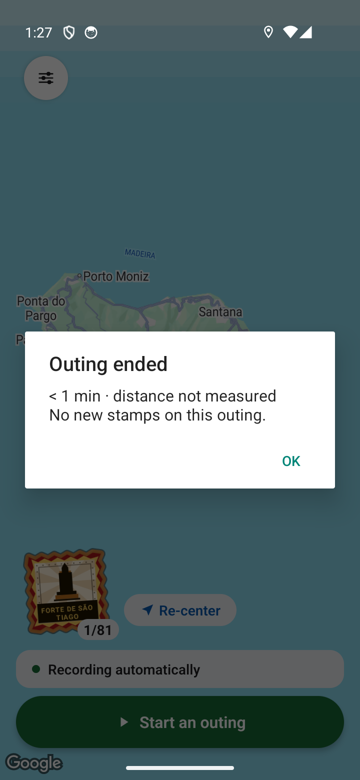
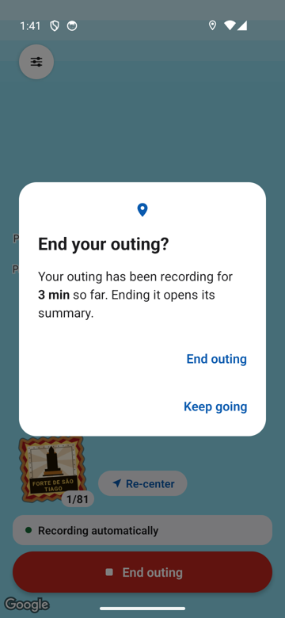
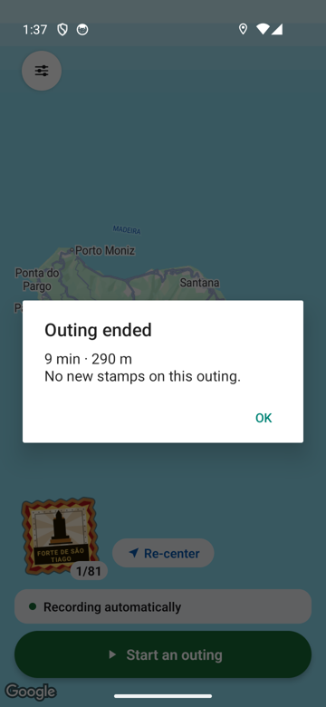
N22: where "Incluído no teu passaporte" is your call
On the passport, in the Porto Santo card just under the unlock banner, in link blue (orange box, your P30 now). Someone who has not paid reads it right after "21 carimbos teus à espera", which may say "free". Not changed.
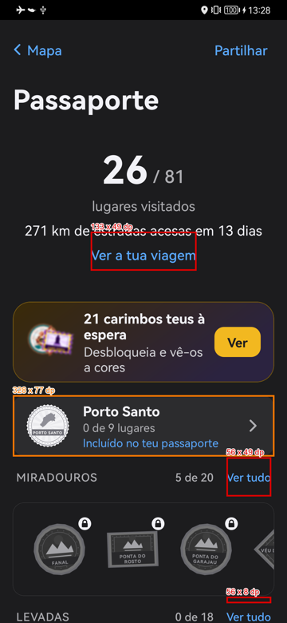
N23: refusing location no longer crashes emulator
Clean install, every permission refused: the map opens with Allow location, and a second launch does not crash. Then location allowed in Android's settings and back to Bruma: the blue dot.
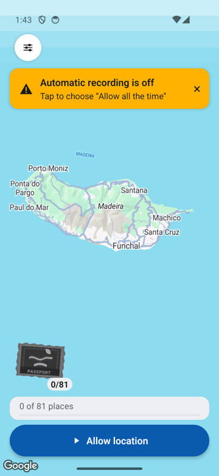
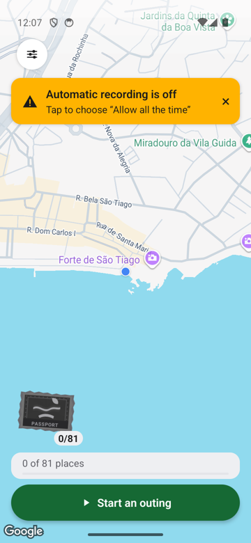
N15: no fine GPS held at home P30
Not visual. What your P30's diary and Android said:
12:11:15 profile driving -> stationary: restart with no recent fix (last fix 1037 min ago) 12:11:16 still check: started on driving (a cache race put driving back, now fixed) 12:17:16 profile driving -> stationary: still by the motion sensors for 6 min, no position (indoors) after the race fix, at home: Bruma's only request every 5 min, balanced power, 100 m
Tonight's night at home is checked automatically tomorrow at 08:30, read only.
New-stamp pop-up counts its own island emulator
A walk replayed to Forte de São Tiago: 1 / 81, where it said 1 / 90. "Bronze passport!" on a first stamp is the tier rule itself (the first stamp reaches bronze), not the island count.
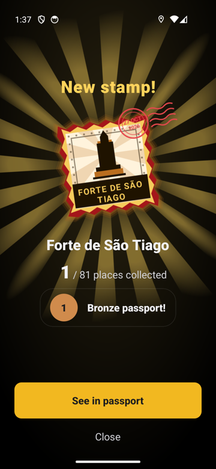
N16: large text wraps whole words emulator
Before, German at 160%: "kostenl / ose Ste / mpel" and a cut status line. After: three languages at 130% and 160%.
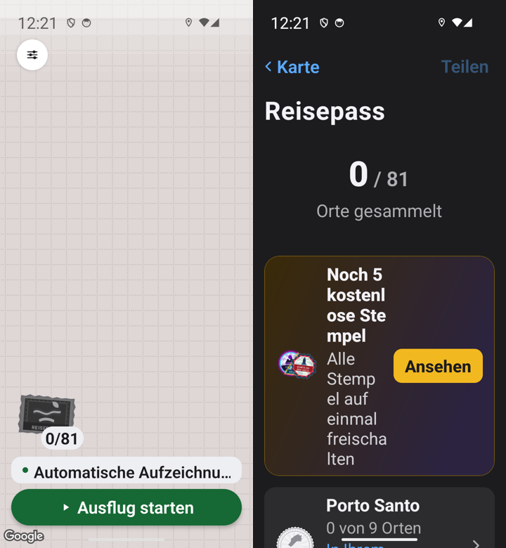
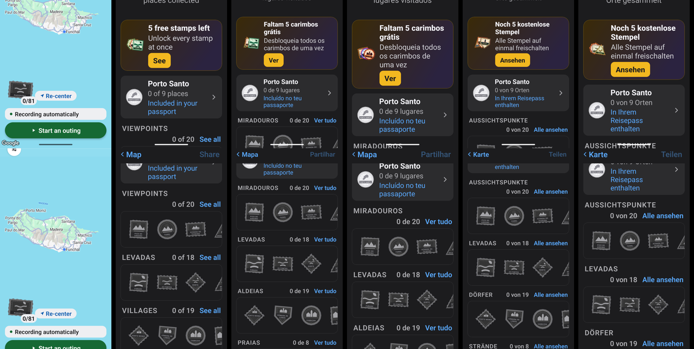
N26: the line through the payment note emulator
Not reproduced in English or German at 160%, from a cold launch or with the size changed while open. Nothing changed for it.
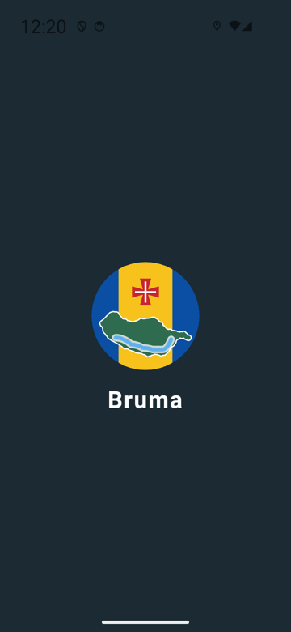
N25: the film's closing frame clears the edges P30 your call: the empty top
Your real trip, before and after. Porto Moniz and the roads now clear both sides. The top half is still sea: a wide island on a tall screen leaves that space somewhere.
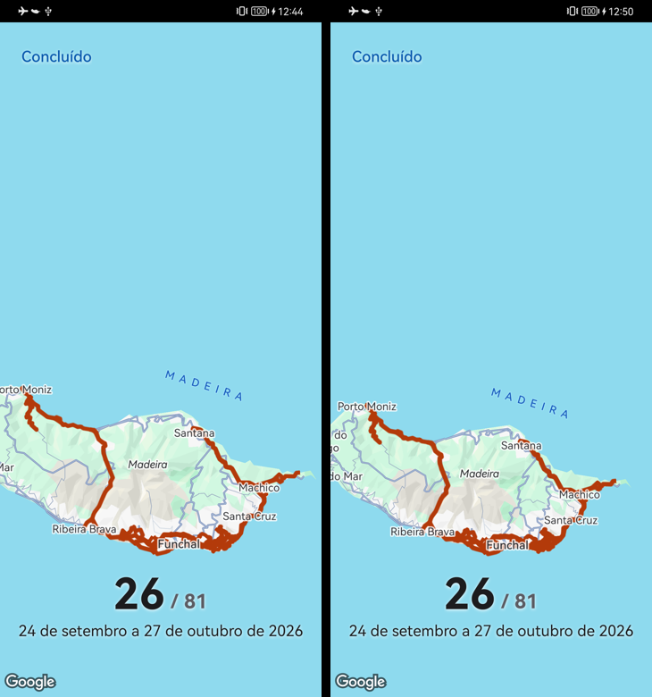
N27: touch areas at least 48 dp, nothing moved P30 your call: the badge
The red boxes are what Android reports, measured on your P30; the screens look exactly as before. Ver tudo 56 x 49, Ver a tua viagem 133 x 49, the switch 52 x 48. The gold badge only 31 x 26: 48 dp would give a quarter of the passport stamp's face to the unlock sheet. (Boxes at the screen's foot read small because the screen cuts them.)
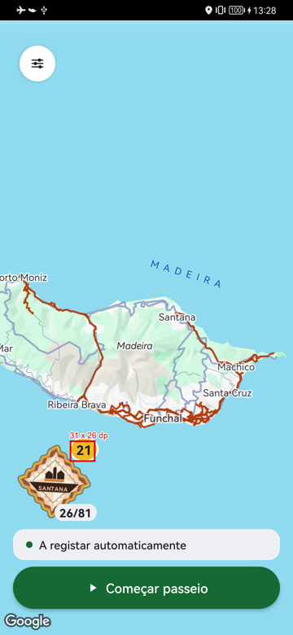
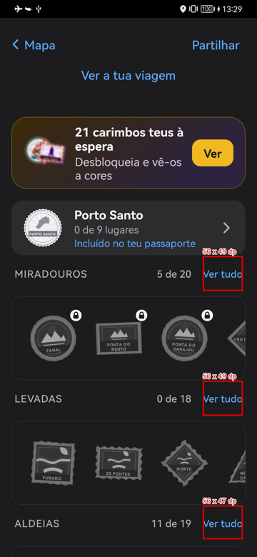
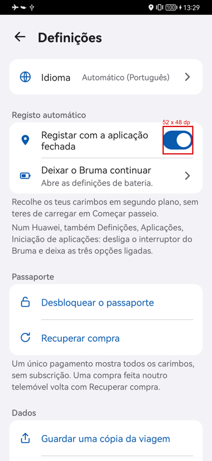
N28: no "Keep Bruma awake" without location emulator
Clean install, all refused: steps 1, 3 and 4 of 5, then straight to the end, with no "don't close Bruma from recent apps" line.
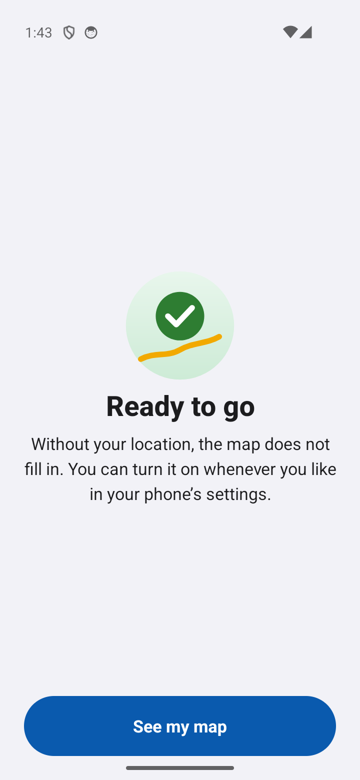
N18: all four options on the background step emulator
360 x 780: Don't allow used to sit 10 dp tall at the foot. The rows not to pick are drawn closer when the card would overflow.
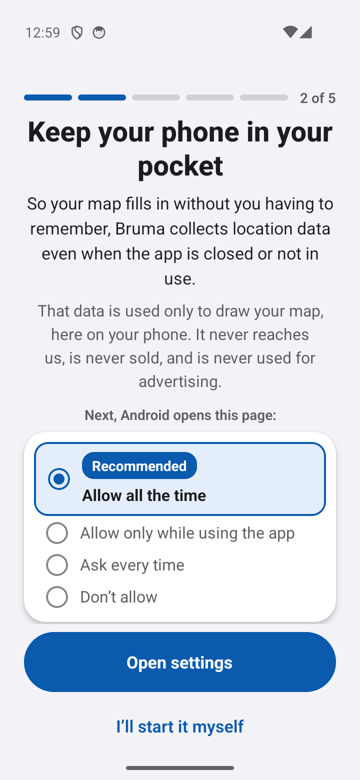
N20: paywall samples print their names whole emulator your call: 12 cut names
Three openings, every sample name whole. Separately, 12 of the 90 names are cut on their own stamps everywhere (Monte Palace, Teatro Baltazar Dias, Jardim Botânico and nine more).
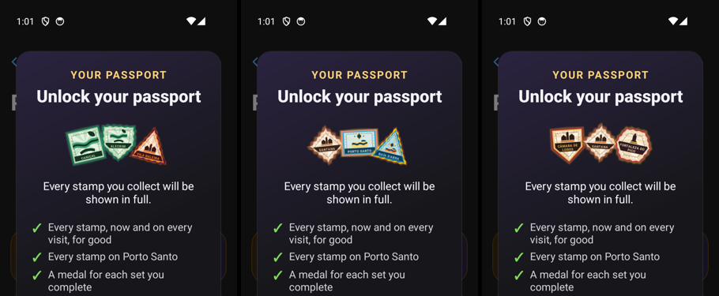
N19: Restore purchase, button and note agree emulator
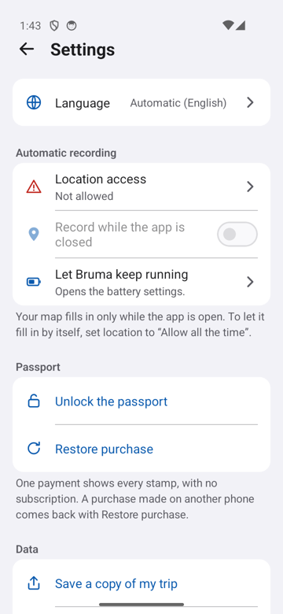